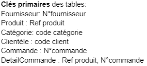
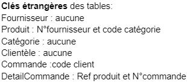
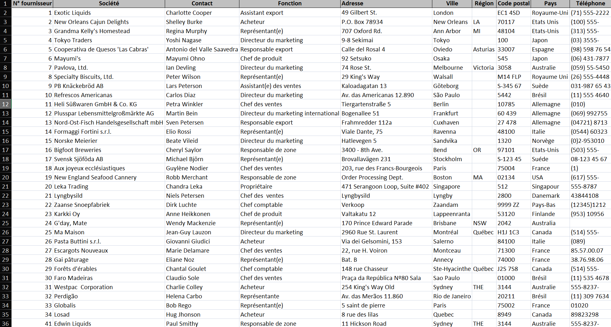
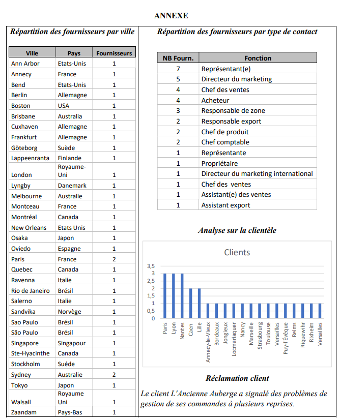

Présentation
Bienvenue sur la mission 1.
L’objectif de cette mission est de commencer à manier excel en répondant aux différentes questions sur l'entreprise fictive Kdou

Bienvenue sur la mission 1.
L’objectif de cette mission est de commencer à manier excel en répondant aux différentes questions sur l'entreprise fictive Kdou
| Énoncé | Dans chaque onglet, identifiez quelles sont les colonnes correspondant ou pouvant correspondre à des clés primaires. |
|---|---|
| Résultat |  |
| Énoncé | Dans chaque onglet, identifiez quelles sont les colonnes correspondant à des clés étrangères. |
|---|---|
| Résultat |  |
| Énoncé | Pour vous entrainer à naviguer dans ces données, on vous demande d’essayer de répondre manuellement aux questions suivantes en étudiant l’extrait fourni : |
|---|---|
| Données |  |
| Question 1 | Combien y a-t-il de clients nantais ? |
| Résultat | Il y a 3 clients nantais. |
| Question 2 | Combien y a-t-il de clients de région parisienne ? |
| Résultat | Il y a 3 clients en région parisienne. |
| Question 3 | Donnez l’adresse du fournisseur Marie Delamare ? |
| Résultat | L’adresse de Marie Delamare est 22, rue H.Voiron, Montceau, France. |
| Question 4 | Combien y a-t-il de fournisseurs en Amérique du Nord ? |
| Résultat | Il y a 7 fournisseurs en Amérique du Nord. |
| Question 5 | Combien y a-t-il de pays dans l’UE autre que la France ? |
| Résultat | Il y a 8 pays de l’UE hors France. |
| Question 6 | Quelle est la fonction du contact fournisseur Ma maison ? |
| Résultat | La fonction de la société Ma Maison est directeur du marketing. |
| Question 7 | Quelle est la fonction de contact fournisseur la plus représentée ? |
| Résultat | Représentant(e) est la fonction de contact la plus représentée. |
| Question 8 | Quels produits (nom, catégorie et prix) a commandé le client Mikal Pavbo ? |
| Résultat | Mikal Pavbo n’existe pas, mais voici les produit commandé par Mikal Torin: |
| Question 9 | Quelles sont les dates des commandes du client MORIU ? |
| Résultat | Le client MORIU n’existe pas mais le client MORJU a comme dates de commandes : |
| Question 10 | Donnez l’offre de produits suédois. |
| Résultat | L’offre de produits suédois est composé de : |
| Question 11 | Quelles sont les catégories de produit vendues par les fournisseurs Singapouriens ? |
| Résultat | Les fournisseurs singapouriens vendent des boissons et des condiments. |
| Question 12 | Est-ce qu’il y a dans la clientèle des clients qui n’ont pas passé de commande ? |
| Résultat | Les clients n'ayant pas encore passé commmande sont : |
| Question 13 | Comment sont conditionnés les produits ? |
| Résultat | Les produits sont conditionnés soit dans des boîtes, des bouteilles, des pots, des sacs, des cartons, des canettes, des verres ou des plaquettes. |
| Énoncé | On espère avoir des données de bonne qualité mais certaines analyses ont déjà mis en évidence certains problèmes. Regardez ces analyses, regardez également si dans certaines colonnes des différentes tables proposées, on peut relever des incohérences ou des choix discutables, repérez et expliquez tout ce qui vous paraît incohérent. |
|---|---|
| Données |  |
| Résultats | On peut remplacer l’attribut fournisseur par Nb.fournisseur pour préciser que c’est le nombre de fournisseurs dans cette ville et dans ce pays. Puis dans la table répartition des fournisseurs par type de contact Dans la table répartition des fournisseurs par ville, on peut voir deux fois la ville de Sao Paulo car il y a un écrit avec un accent et l’autre non, cela conduit à deux tuples différents dans la table. Il y a aussi 2 fois Royaume-Uni un avec un tiret et un sans. Il y a 2 Suède un avec é et un avec è. Il y a 2 fois Australie, l'une avec un ‘e’ à la fin et un autre avec un ‘a’ à la fin. On peut voir que la fonction représentante existe en deux fois. L’un a des parenthèses qui entourent la lettre “e” et l’autre non. De plus, la fonction Chef des ventes apparaît en deux fois à cause d’un espace en plus entre “des” et “ventes”. La réclamation client manque de détails spécifiques, ce qui complique l’analyse. Peu de responsables de zone, mauvaise répartition des fournisseurs en France. |
| Énoncé | Avez-vous des idées d’amélioration de l’organisation de ces données ? |
|---|---|
| Résultats | Corriger les fautes d'orthographe dans les tables. Uniformisation des noms comme représentant. Clarification du graphique (nommer l’axe des ordonnées et des abscisses et enlever les nombres à virgule dans les ordonnées). |